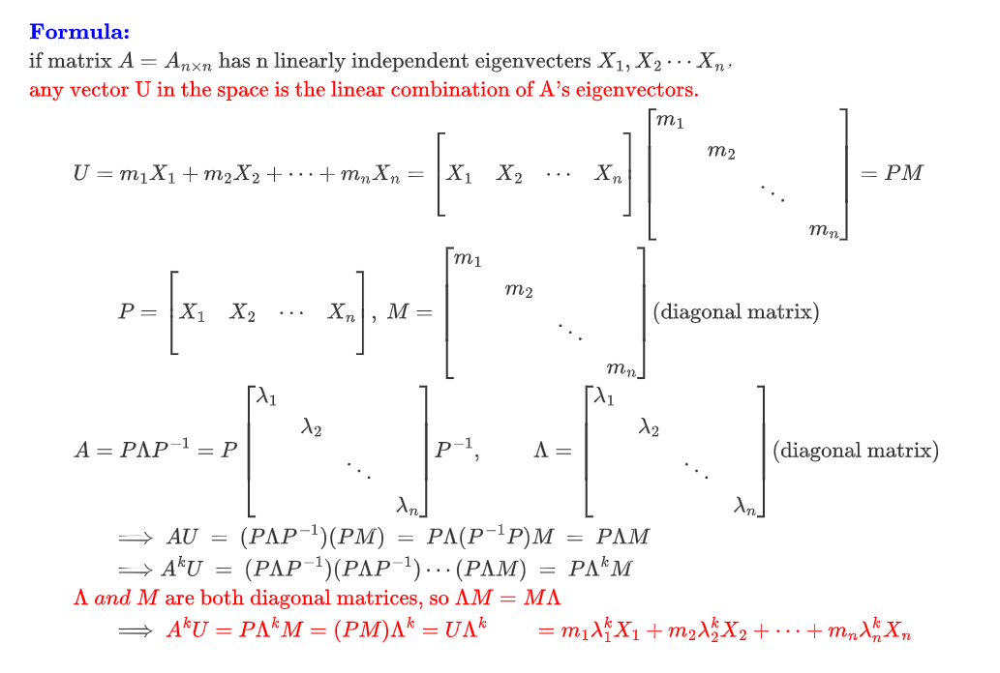
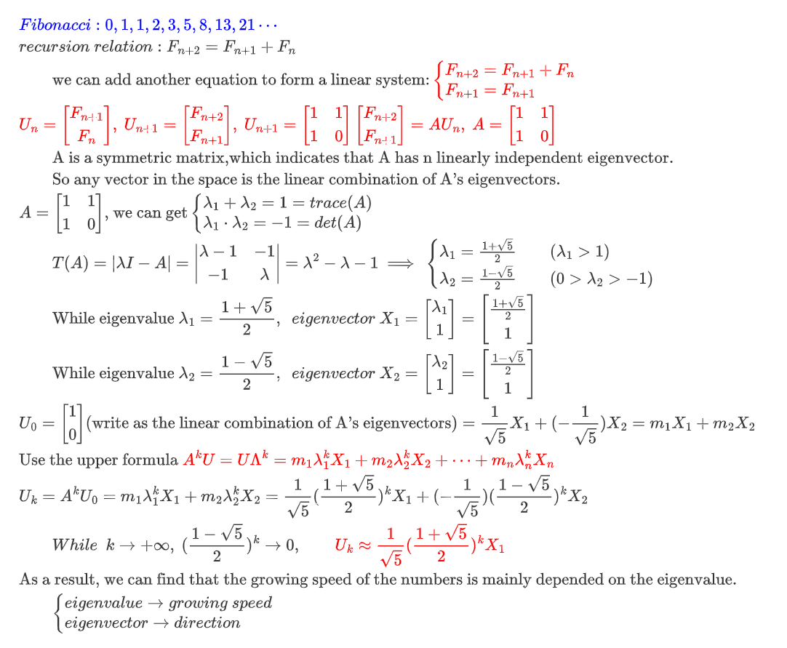

Fibonacci
引言
最初学到Fibonacci的解法时，我被深深震撼了，觉得从幼儿园到大学，一直在头顶盘旋着的大问题终于得到了解答——这个数列到底是个什么东西？从小学的找规律，到初中第一次看见通项公式，直到后来才发现，好像没什么了不得的。
附通项公式：
$$
a_n=\frac{1}{\sqrt{5}}
\left[
\left(
\frac{1+\sqrt{5}}{2}
\right)^n -
\left(
\frac{1-\sqrt{5}}{2}
\right)^n
\right]
$$
常见的Fibonacci的解法是用常系数线性递推的母函数方法，但先不说这个，这里写另外一种用矩阵迭代的求解方式，鉴于我对矩阵爱得深沉……它与母函数的方法相比确实麻烦一点，但给人的几何感却更强，很有趣。如果有时间的话，我想哪次探讨一下求解微分方程、常系数线性递推和矩阵求解的联系，若不深究，那这一篇也只是雾里看花罢了。
原理还是很简单的：通项公式记为矩阵$A$，将前两项记为列向量$v_0$，则Fibonacci两项就可以看为前两项的，关于$A$的一个线性变换。把$v_0$拆成$A$特征向量的组合，不停乘以$A$就好了。（拆成特征向量是考虑到，矩阵乘自己的特征向量就是：$AX=kX$）注意到，Fibonacci的通项公式写成矩阵刚好是个实对称矩阵，显然有两个线性无关的特征向量，那么随便给两个初项写成的列向量一定能被它俩表示，就一定有解。
解法
第一部分：公式推导
博客对latex的align的支持不太好，这里就直接放截图了。

- TIPS：就是迭代。利用矩阵的相似对角化，和$$AX=kX$$大批量化简迭代中的$$P^{-1}P$$部分，剩下的对角阵就会变得相当好看。
第二部分：解
